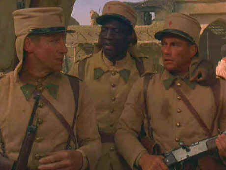

Sterling/1998/99m/PS !.33
After a promising start with a well-plotted prelude that takes place in Marseilles, Legionnaire fails to navigate the sands of the Moroccan desert effectively.
 |
Van Damme and friends in the Legion ©Sterling |
Jean-Claude Van Damme stars
as Alain Lefevre, a prizefighter that crosses the local mob by failing to take a dive
after it was set up. After a chase through the Marseilles streets, Alain spots a
convenient Foreign Legion recruiting station. Cut to Morocco: Alain is a recruit in the
French Foreign Legion. Legionnaire spends some good moments introducing
Alain’s fellow recruits. The training is executed in quick strokes like a fighter
throwing a series of jabs. There’s a good barracks brawl that has Alain taking on the
German bully. It’s actually restrained in terms of Van Damme fights. An obbligato
whore house scene is included as well as some cliché speeches by the drillmaster.
Legionnaire loses its force when it begins a tedious march
to a desert fort to confront the natives. One of Alain’s buddies can’t make it
through the march and it’s up to Alain save him. Once in the fort, two Marseilles
hoods miraculously show up to take care of Alain for dumping the fight and causing the
death of the mob bosses brother. There’s treachery afoot. Between the marauding Arabs
and the hoods can Alain survive?
Van Damme is pretty tight-lipped as Alain Lefevre, but that is
not surprising. He’s quite effective in the role actually. His performance in the
Marseilles segment is particularly well done. And this is one of Van Damme best dressed
outings. Supporting players are variably convincing.
Legionnaire was shot 2.35 and some of the PS compositions look
compromised. There are several scenes with actors sliced in half at he periphery of the
screen. Still, the transfer looks very nice. The image is consistently sharp. Desert grain
is handled with care. The artistically lighted desert sequences look especially good on
this DVD. The two-channel Dolby Digital surround adds reasonable ambiance to the doings.
The glimpse of the Moroccan marketplace comes to life both visually and sonically.